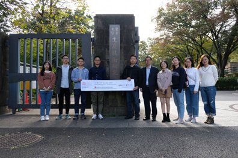
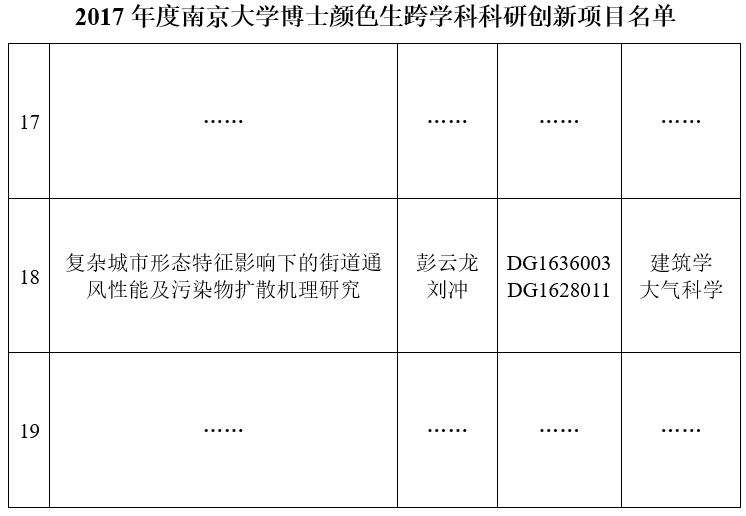
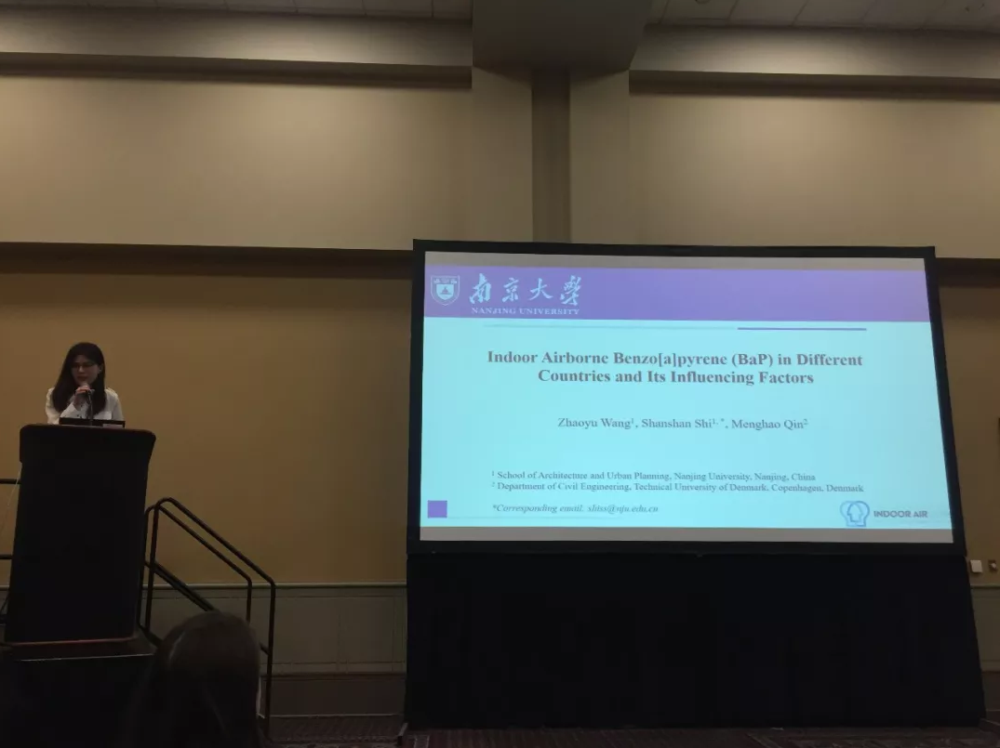
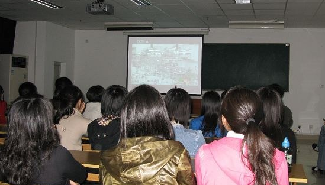
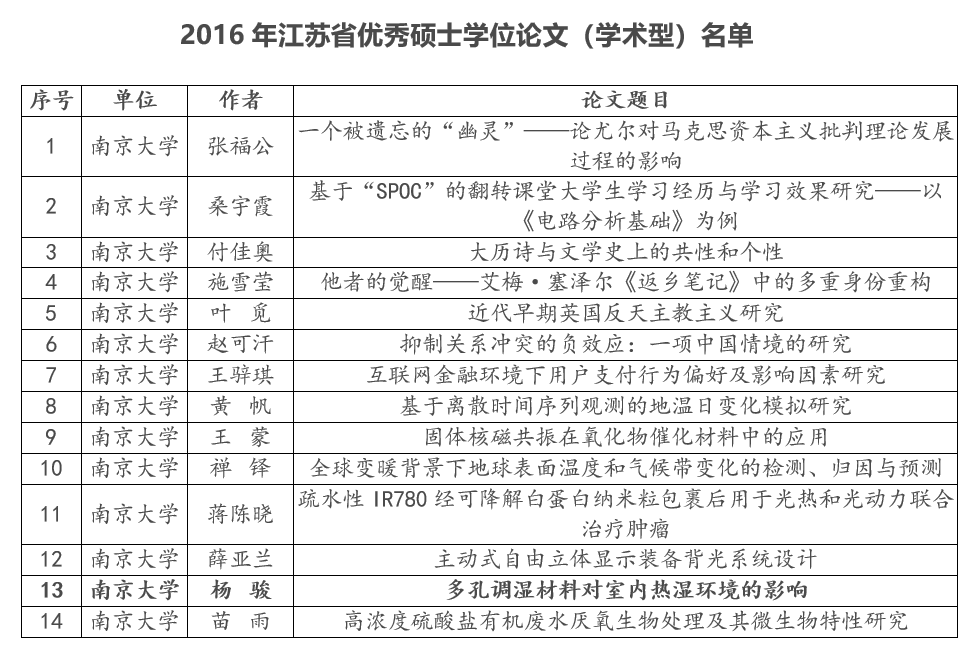

|  |
2018樱花计划交流小结 建筑与城市规划学院 建筑与城市规划学院 吕童：非常有幸能够参加这次赴日交流学习的机会，短短的七天带给我的感受异常深刻。不仅是对日本如今的城市与人、科技与教育有了新的印象，而且对于科学研究与城市发展和文化的理解也有了新的思考。 |
|  |
博士生彭云龙获得2017年度“南京大学博士研究生跨学科科研创新基金”资助 2016级博士生彭云龙作为项目负责人，2017年与大气科学学院博士生刘冲联合申请的课题“复杂城市形态特征影响下的街道通风性能及污染物扩散机理研究” 获得2017年度“南京大学博士研究生跨学科科研创新基金”资助，资助金额16万元，是学院首次获得跨学科基金项目资助，本次申请全校共提交申请书100余份，最终22项入选。 |
|  |
王照宇荣获第十五届国际室内空气品质与气候会议（Indoor Air）组委会学生奖 第十五届国际室内空气品质会议于7月22日至7月28日在美国费城召开。会中，我院二年级研究生王照宇荣获组委会学生特别资助奖，为五位获奖者中唯一的中国高校学生。 |

|
沈佳磊荣获2017年健康建筑欧洲学生旅行奖获奖 我们很高兴地宣布将于7月份前往卢布林2017年健康建筑欧洲学生旅行奖获奖者的名单： 斯洛伐克布拉迪斯拉发斯洛伐克理工大学Ema Nemethova Hayder Alsaad，包豪斯大学，魏玛，德国 沈佳磊，南京大学，中国 |
|  |
陈智博士获得2016年度南京大学博士研究生校长特别奖学金 根据《南京大学博士研究生校长特别奖学金评选办法（试行）》文件规定，经个人申请、院系初评推荐、学校组织专家对候选人进行面试， 确定2016年度南京大学博士研究生校长特别奖学金入选名单共计29人：我中心14级博士生陈智荣获本年度校长特别奖学金。 |
|  |
杨骏同学的硕士毕业论文荣获2016年江苏省优秀硕士学位论文（学术型） 2016年江苏省优秀硕士学位论文（学术型）评选结果出炉，南京大学共计有14位同学的论文入学，中心杨骏同学的论文“多孔调湿材料对室内热湿环境的影响”入选。 |

01
Multi-scale Urban Climate Modeling
Lecturer: Prof.
Riccardo Buccolieri
Period: May 27-31, June 3-5
This course gives students a comprehensive introduction to the theoretical basis of the application of atmospheric boundary layer, urban canopy, energy exchange, urban heat island effect and urban ventilation index in urban microclimate, as well as the research methods of urban microclimate related issues, and establishes a more comprehensive and systematic theoretical knowledge framework for students.
At the same time, based on the theoretical basis, the course provides two simulation tools, ENVI-MET and ADMS, which are applied to the study of urban microclimate. It broadens students'research horizons. At the same time, it also applies simulation tools to solve the problem of urban pollutant diffusion and deepens the understanding of the transition from theory to practice.
The course also explains English academic writing, and in the form of research reports, students are required to submit simulation application reports of English software as a test of course performance. This assignment not only strengthens the graduate students'understanding of software applications, but also trains the writing skills of English reports.
02
Virtual Design Studio for Green Building Systems (VDS-GBS)
Lecturer:
Prof.
Jianshun Zhang
Course Description: Introduction to the fundamentals and applications of the “Virtual Design Studio (VDS)” - a digital platform for integrated, coordinated and optimized design of building energy and environmental systems (BEES); Exploration of multi-disciplnary, multi-objective, and multi-stage design process and methodlogy assisted by the VDS; Understanding of the flows of heat, air, moisture and pollutant in BEES and their impacts on the energy and environmental performance of buildings; Analysis of effects of climate and site, form, massing and orientation, internal configuration, external enclosure, and environmental control system on building performance using VDS; Exploration of integrative and innovative technologies in the design of ‘green’/sustainable buildings from canonical to real world case studies.
Textbooks and Major References:
• No textbooks are required. Major reference materials and documents for the course case studies will be provided for class use
• Virtual Design Studio: Part I – Interdisciplinary design processes; Building Simulation – An International Journal, Tsinghua University Press and Springer: Publishers, Print Volume 6 Nr.3 – 2013.
• Virtual Design Studio: Part II – Introduction to the overall and software framework; Building Simulation – An International Journal, Tsinghua University Press and Springer: Publishers, Print Volume 6 Nr.3 – 2013.
• Hausladen, de Saldanha, Liedl, Sager. Climate Design. Basel: Birkhäuser, 2005.
• VDS software and current working version of VDS software tutorial
• CHAMPS-BES software: http://beesl.syr.edu/champs.htm
• CONTAM software: http://www.bfrl.nist.gov/IAQanalysis/software/index.htm
• Syracuse COE Headquarters Building design documentation (LEED Platinum)
• Zhi-Dong Zhuang-Yi (Creative Intention) managing office building
• Shengzheng Building Research Institite (SBR-i) green building